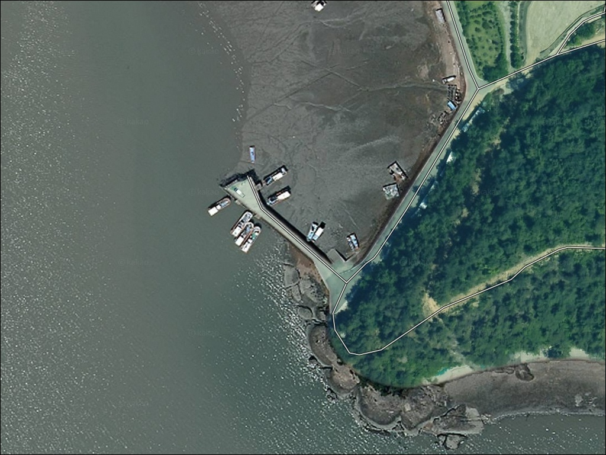
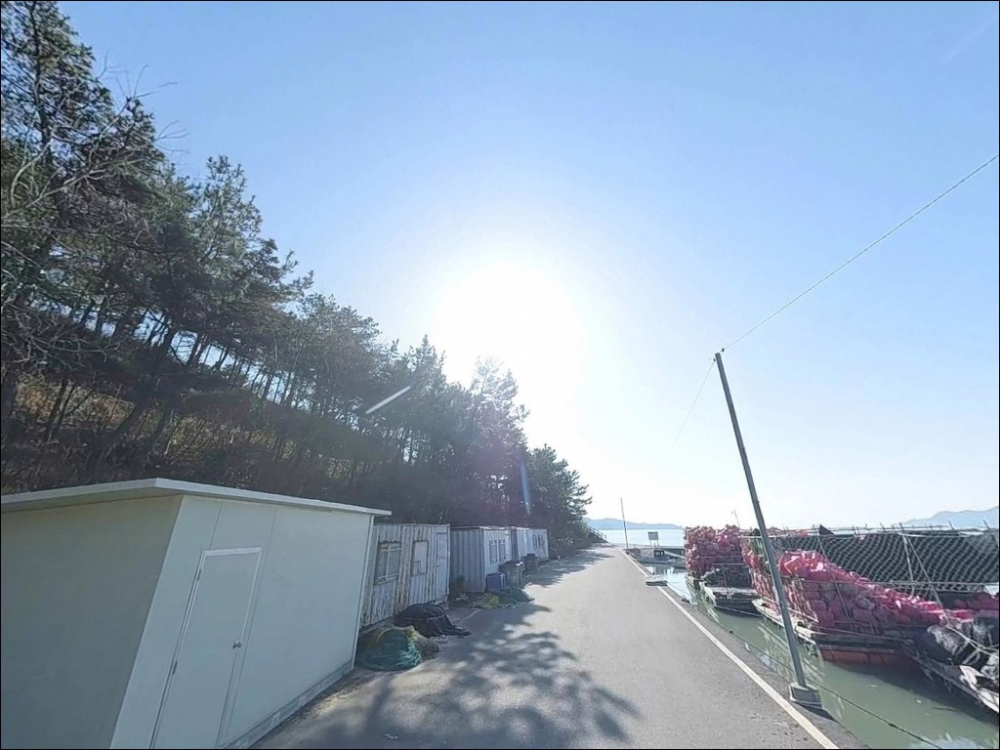
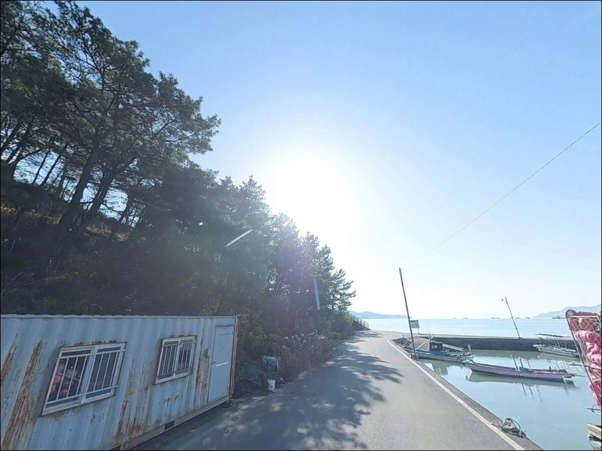
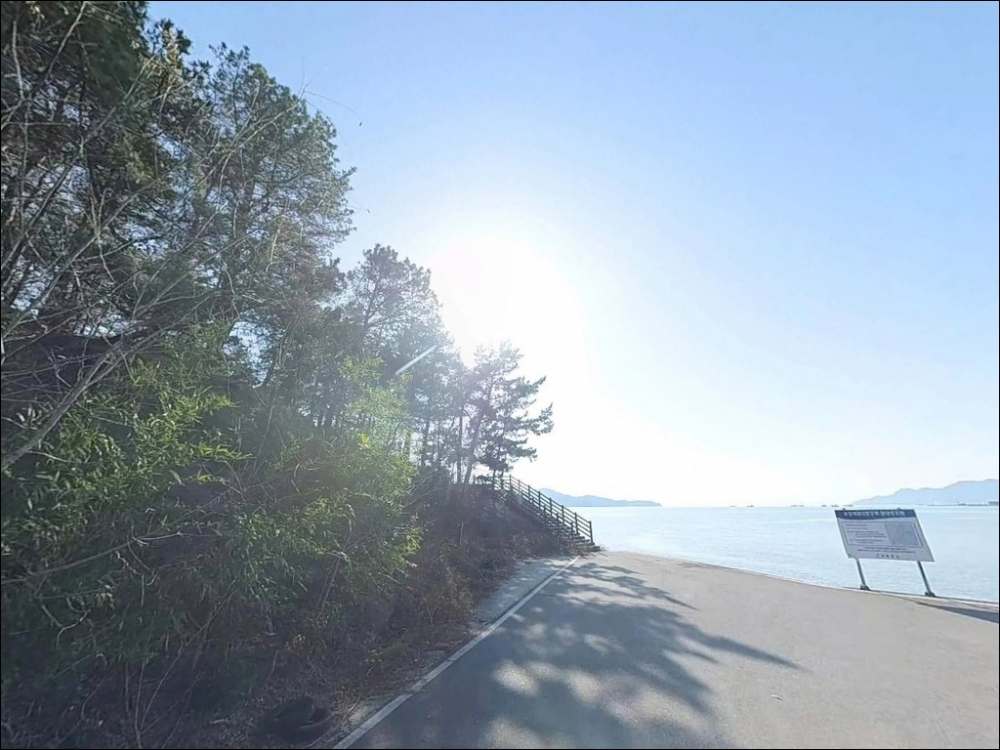
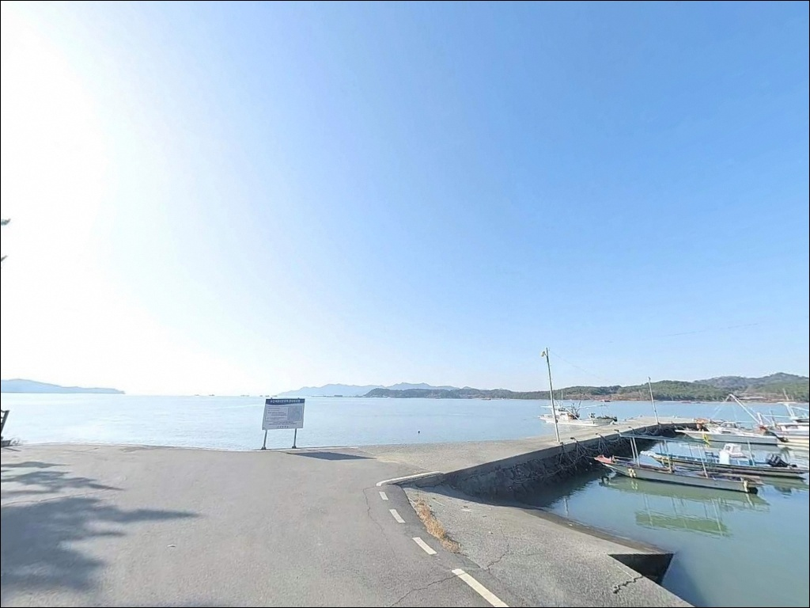
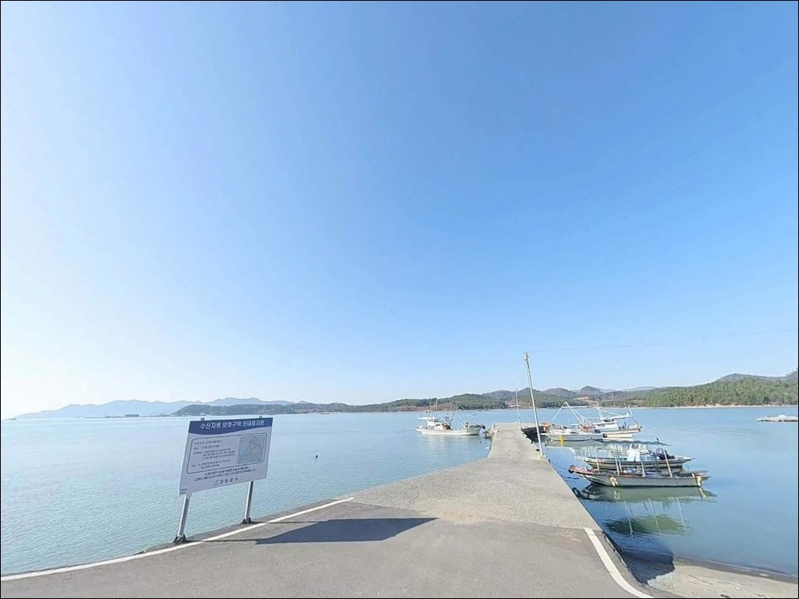
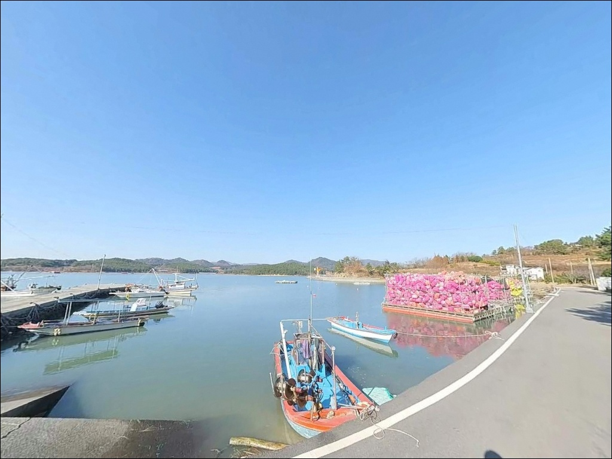
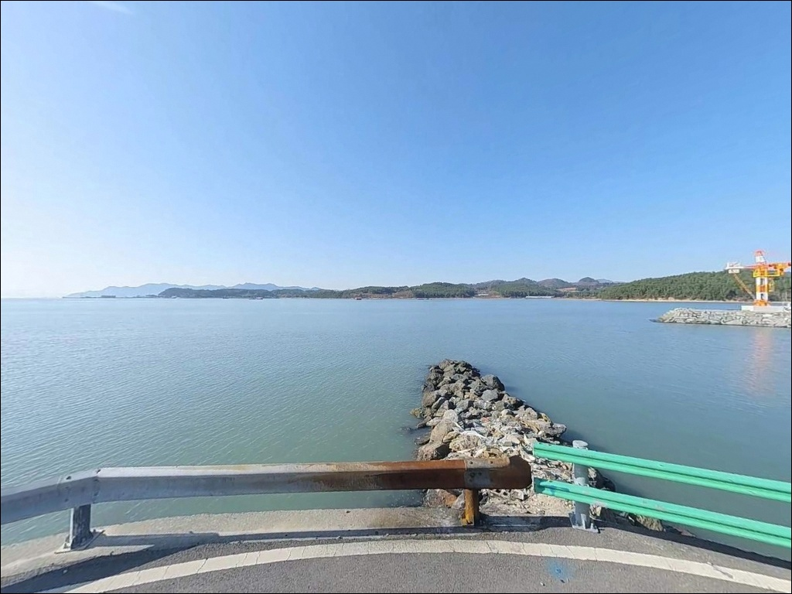
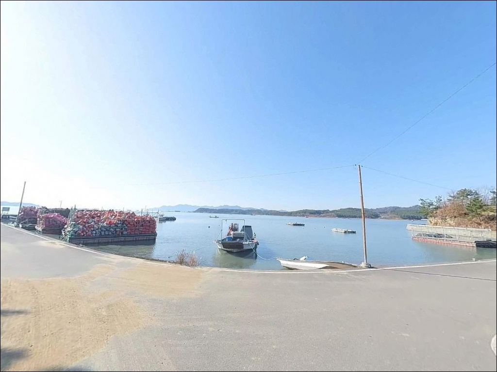

이 페이지에는 광고(제휴 링크 포함)가 있으며, 광고 링크를 통해 구매하면 운영자가 판매 수익 또는 수수료를 받을 수 있습니다. 포인트 사진: 카카오맵 스카이뷰·로드뷰. 이 페이지의 지도·사진 이미지는 카카오맵의 실제 서비스 이미지와 다를 수 있습니다.


송림리방파제, 전남 고흥군 해변가 노지에서 즐기는 바다 차박 낚시 명소
포인트 안내
송림리방파제
전남 고흥군 대서면 송림리 593-15
득량만은 조수 간만의 차가 큰 해역입니다.
물때 계산 없이 송림항에 들어서면
간조 전후 수심이 급격히 낮아져
어떤 방식으로 채비를 운용해도
바닥을 끌고 다니는 상황이 됩니다.
중들물 이후 수심 확보 타이밍이
이 포인트의 조과를 결정하는 핵심 변수입니다.
전남 고흥군 대서면 송림리 593-15,
송림항 방파제는 득량만 내측으로 서쪽을 향해
길게 뻗은 굴곡형 구조의 소형 지방어항 방파제입니다.
외항 쪽은 석축과 테트라포트로 구성되어 있고,
방파제 끝단에서 조류의 소통이 가장 활발해
원투낚시와 감성돔 찌낚시 모두
끝단 집중 공략 구조입니다.
이 글은 송림리방파제의
진입 동선, 차박 여건, 물때 판단 기준,
낚시 스타일별 공략 조건에 집중합니다.
특정 어종의 조황 단정이나
시설 이용 보장은 이 글의 범위에
포함되지 않습니다.

1. 진입 동선과 포인트 접근성
대서면 소재지에서 송림길을 따라
마을 안길을 통과하면 송림항 방파제에 닿습니다.
마을 안길 구간은 폭이 넓지 않아
서행이 기본이며, 대형 차량이라면
출발 전 위성지도로 진입로 폭을
먼저 확인하는 편이 좋습니다.
항구 입구와 방파제 시작점 부근에는
차량 회차가 가능한 공간이 확보되어 있습니다.
진입로 통과 이후 회차 여건은 비교적 넉넉한 편이며,
중소형 차량 기준으로 진입과 회차
모두 큰 어려움이 없는 구조입니다.
주차는 송림항 선착장 인근 공터를
활용하는 방식이 기본입니다.
다수 차량 주차가 가능한 공간이며,
방파제 진입로 측면 평탄지도
낚시 자리와 인접한 주차 후보입니다.
어선 입출항 동선과 계류 구역을
막지 않는 자리를 우선으로 잡아야 합니다.

2. 차박 환경과 야간 체류 여건
송림마을은 소규모 어촌 취락으로
야간에는 차량 통행이 거의 없는
조용한 분위기가 형성됩니다.
민가 인접 구조이므로 프라이버시가
완전히 분리되는 환경은 아니지만,
낚시 후 하룻밤 머무는 조건으로는
적합한 수준의 정온 환경입니다.
항내 가로등이 설치되어 있어
기본적인 시야 확보는 됩니다.
다만 방파제 끝단으로 갈수록
광량이 급격히 줄어드는 구조여서
야간 낚시 시에는
헤드랜턴과 개인 조명 장비를
반드시 준비해야 합니다.
득량만 방향 바람이 강해지는 시기에는
방파제 외측에 파도 영향이 미칩니다.
출조 당일 풍향과 파고 예보를
기상청에서 미리 확인하고,
남서풍이 강한 날에는 외항 쪽
낚시 자리 선정을 신중하게 해야 합니다.
야간 차박 시에는
민가 인근 소음 발생에 주의하는 것이
기본 매너입니다.


3. 주변 편의시설 및 인프라 현황
대서면 소재지가 방파제에서
3~5km 이내에 위치합니다.
농협 하나로마트, 식당, 보건지소,
치안센터가 면소재지 인근에 있으며,
주유소도 대서면 소재지 내에서
이용할 수 있습니다.
출발 전 필요한 장비와 식료품은
대서면 소재지에서 보충하는
동선이 현실적입니다.
응급 상황 발생 시에는
고흥읍까지 이동해야 하며,
고흥종합병원이 고흥읍 내에 있습니다.
거리가 있는 편이므로
비상약품과 수분은 출발 전에
넉넉하게 준비하는 편이 좋습니다.
송림항 인근에는 고흥군수협 송림 위판소가
위치합니다.

4. 물때가 조과의 전부를 결정하는 이유
득량만 일대는 조수 간만의 차가 크기로
알려진 해역입니다.
송림항도 이 패턴에서 벗어나지 않으며,
간조 전후에는 방파제 전방 하단에
갯벌과 여밭이 드러나고
수심이 급격히 얕아집니다.
중들물 이후 수심이 확보되는 타이밍에
낚시를 시작해야 채비 운용이 가능한 구조입니다.
바다타임에서 고흥 대서면 기준
물때를 확인하고, 당일 만조 시간을
기점으로 낚시 시작 시간을
역산하는 방식이 기본 전략입니다.
사리 전후에는 조류 흐름이 빨라지는 편이므로
채비 무게를 상황에 맞게 조정해야 합니다.
기상 변화도 빠른 해역이어서
출조 당일 아침 기상청 해양특보와
파고 예보를 한 번 더 확인하는 것이
포인트 낭비를 막는 조건입니다.
암초가 혼재된 지형 특성상
여분 채비는 충분히 준비하는 편이 좋습니다.

5. 지형 기반 낚시 여건 분석
송림항 메인 방파제는 서쪽으로 길게 뻗어
중간에 한 번 굴곡진 형태를 이룹니다.
이 꺾이는 구간, 즉 콧부리가
조류가 집중되는 핵심 자리입니다.
외항은 석축과 테트라포트로 구성되어 있고,
방파제 끝단은 조류 소통이 가장 활발하며
수심 변화도 뚜렷해집니다.
만조 기준 방파제 끝단의 수심은
5~7m 수준을 유지하는 구조입니다.
간조 시에는 전방 하단에 갯벌과
여밭이 혼재된 지형이 드러나므로
수중 암초 경계선 탐색은
중들물 이후 수심 확보 시점부터가 효율적입니다.
외항 직벽과 끝단 구간이
이 방파제에서 가장 먼저 자리를 잡아야
할 포인트 구간입니다.
득량만 내측 조류는 만조-간조 주기에 따라
방향성 있는 흐름이 형성됩니다.
방파제 외측에서 이 흐름을 타는 구간이
어종이 머무는 자리이며,
바닥은 펄과 암반이 혼재된
혼합형 지형입니다.
최신 조황은 가기 전에 꼭 검색해 보시기 바랍니다.


6. 포인트에 어울리는 낚시 스타일
원투낚시는 이 방파제 지형에 가장 잘 맞는
방식입니다.
외항 및 끝단에서 전방 여밭이나
수중턱을 노리는 방향으로 캐스팅하면
펄과 암반이 혼재된 바닥층 어종을
공략할 수 있는 구조입니다.
새로 정비된 방파제 위는 발판이 평탄해
장타 원투 채비를 운용하기 좋습니다.
감성돔 찌낚시도 이 포인트와 잘 어울립니다.
방파제가 굴곡지는 콧부리 구간에서
조류를 흘리는 반유동 채비 방식이
고흥 일대 방파제에서 검증된 공략법입니다.
감성돔은 가을철 방파제 주변으로
집결하는 패턴이 이 해역 전반에 걸쳐
나타나는 편입니다.
루어·에깅 방식도 운용이 가능합니다.
방파제 선단과 석축 경계면을
탐색하는 루어 방식은 락피시 계열 어종에
유효하며, 고흥 일대 해역은
갑오징어·주꾸미 에깅 포인트로
해역 전반이 해당됩니다.
에깅은 방파제 외측 야간 시간대에
효율이 올라오는 편입니다.

7. 대안 포인트와 플랜 B 동선
송림항 여건이 여의치 않을 때
가장 먼저 검토할 대안은
거차항 방파제입니다.
지형적 특성이 유사하고
조류 흐름이 강한 포인트로,
같은 고흥 해역에서 방파제 낚시를
이어가기에 적합한 대안입니다.
신기항도 인근 동일 해역의
대안 포인트입니다.
동일한 방파제 지형 구조이며,
조류와 어종 패턴이 유사합니다.
남도방파제도 조류 소통이
유사한 구조로 알려진 포인트입니다.
차박 대안 후보로는
선정해안길 인근 주차 공간이 있습니다.
일몰 조망 여건이 좋고
공간이 넓어 차량 체류 여건은
송림항보다 여유로운 편입니다.
포인트 이동 시 고흥읍 방향으로
진출하면 편의점과 마트를
이용하기 쉬운 동선이 형성됩니다.

물때 한 번 맞추면
송림항 방파제가 달라 보입니다
원투낚시나 감성돔 찌낚시를 즐기는
낚시인이라면 송림항 방파제의
지형 조건은 잘 맞는 구조입니다.
굴곡진 방파제가 만드는 콧부리 자리,
끝단에서 살아나는 조류 흐름,
5~7m 수심의 바닥층 공략 여건까지
복수의 낚시 방식을 동시에
운용할 수 있는 포인트입니다.
단 물때 계산 없이 진입하거나
간조 전후에 자리를 잡으면
낚시 여건 자체가 성립하지 않는
상황을 만나게 됩니다.
물때 확인, 여분 채비 준비, 개인 조명 지참,
이 세 가지를 갖추고 출발하면
기억에 남는 조행이 될 수 있는 포인트입니다.
대서면 인프라를 등에 업고
조용한 어촌 마을 방파제 옆에서
하룻밤 낚시와 차박을 함께 즐기고 싶은
분이라면 송림항이 잘 맞는 선택입니다.